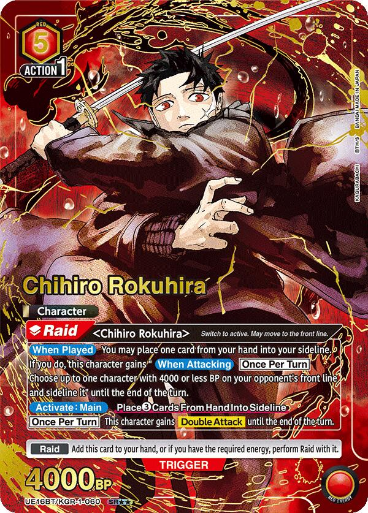

The workshop 工房
 The seriesJump 2023 · 11 volumes · 4M+
The seriesJump 2023 · 11 volumes · 4M+
 The premiseKunishige, the raid, Enten
The premiseKunishige, the raid, Enten
 The bladesSeven swords. One cellar.
The bladesSeven swords. One cellar.
 The storyPart 1 · Part 2 · four arcs
The storyPart 1 · Part 2 · four arcs
 On paperISBNs, jackets, 2027 anime
On paperISBNs, jackets, 2027 anime
Fresh steel 新打
 Part 2Princess through Ironworks, ch. 116–129
TechniquesBlade kit and innate arts
Part 2Princess through Ironworks, ch. 116–129
TechniquesBlade kit and innate arts
 The StorehouseHakuri’s walking Kura
The StorehouseHakuri’s walking Kura
 HishakuThe ten who raided the house
HishakuThe ten who raided the house
 The rest of the tenToto, Yukisada, Bingo, and the still-unnamed
Volume synopsesEleven spines, told in sentences
The rest of the tenToto, Yukisada, Bingo, and the still-unnamed
Volume synopsesEleven spines, told in sentences
 Anime countdownApril 2027 · Cypic · how to watch
Anime countdownApril 2027 · Cypic · how to watch
 The leadership tableIchiki, Yatsuru, Izaru, and the rest of the heads
The leadership tableIchiki, Yatsuru, Izaru, and the rest of the heads
Asked a lot 質問
When is the Kagurabachi anime?April 2027 · Cypic · how to watch
Where do I read Kagurabachi?VIZ and MANGA Plus, same week as Jump
What are Enchanted Blades?Seven swords. Goldfish, clouds, flowers
Is this a Kagurabachi wiki?Encyclopedia depth. Search the archive
Is there a Kagurabachi card game?UNION ARENA · Chihiro, Hakuri, Shiba
Sunday ink 日曜
 Sunday boardPictures from Reddit and X
Sunday boardPictures from Reddit and X
 Sunday wallThe glaze, typeset on official stills
Sunday wallThe glaze, typeset on official stills
 The bowlKuro, Aka, Nishiki
The bowlKuro, Aka, Nishiki
 QuotedGoldfish, True Realm, Hakuri
QuotedGoldfish, True Realm, Hakuri
 The workshopHouse, cellar, bowl, raid
BattlesSojo, the auction, the hotel
The workshopHouse, cellar, bowl, raid
BattlesSojo, the auction, the hotel

UNION ARENAKagurabachi cards, pictured ToC ritualWe’re so back. The jackets are the record
ToC ritualWe’re so back. The jackets are the record